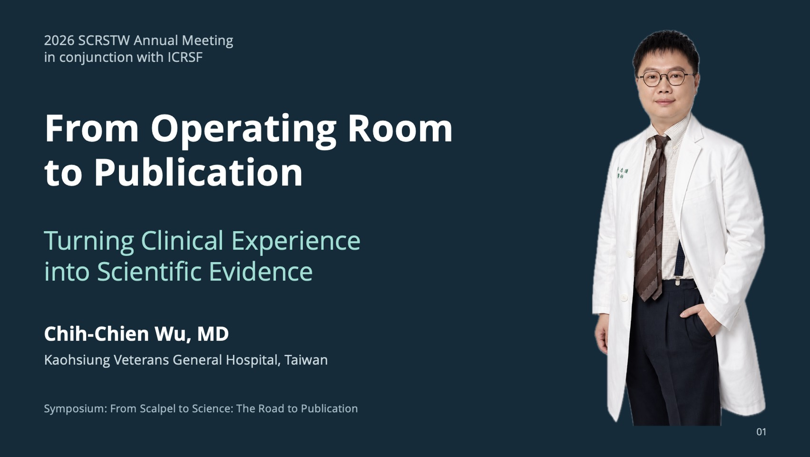

Nationwide linked data
Taiwan Cancer Registry + claims + mortality
Strengths: scale, treatment sequences, long-term outcomes
Limits: surgical detail and unmeasured confounding

2026 SCRSTW Annual Meeting
in conjunction with ICRSF
Turning Clinical Experience into Scientific Evidence
Symposium: From Scalpel to Science: The Road to Publication
Good morning, colleagues, and thank you very much for the invitation. The earlier talks have already covered how to write a paper, how to structure one, why papers are rejected, and what AI can and cannot do. So I won't try to give you another writing lesson. Instead, I'd like to tell you a rather personal story: how questions arising in the operating theatre became research projects, and eventually publications. I'm a colorectal surgeon and surgical oncologist. Like many of you, I began with more clinical ambition than research resources. What changed was not simply acquiring a bigger dataset. It was learning to ask better questions, and finding the right people with whom to answer them.
Early career
Limited time · limited funding · limited statistical support
Mid-career
A clinical niche · trusted collaborators · a growing research programme
The turning point was not “having enough resources”.
It was treating everyday clinical uncertainty as a research opportunity.
When I was a younger surgeon, my priority was straightforward: become technically reliable, look after patients, and survive a very busy clinical schedule. Research often felt like something that belonged to people with protected time, large grants, or a specialist data team. I certainly didn't have all of those things. Over the years, my perspective shifted. Instead of waiting for the perfect conditions, I started collecting the questions that kept appearing in clinics, multidisciplinary meetings, and at the operating table. As I became a mid-career surgeon, I also learnt a crucial lesson: independence does not mean doing everything alone. A coherent clinical focus, reliable colleagues, and an honest question can be more valuable than a large research budget.
Should we resect an asymptomatic primary tumour when metastatic disease is unresectable?
Can a robotic intracorporeal anastomosis be made reproducible and safe?
Which systemic treatment creates a genuine opportunity for conversion surgery?
One principle: formulate the question before opening the spreadsheet.
Here are three questions that genuinely mattered to our clinical work. First, in metastatic colorectal cancer, are we helping a patient by removing an asymptomatic primary tumour, or simply exposing them to an operation and delaying systemic treatment? Second, during robotic surgery, we may feel that a different anastomotic technique is better. But can we show that it is practical, repeatable, and safe? Third, when targeted treatment shrinks a metastatic tumour, is the real clinical benefit the drug alone, or the opportunity to operate afterwards? Notice that none of these questions begins with a p-value. They begin with a decision that clinicians struggle with. My advice is to write the clinical question in one sentence before asking which data are available.
Taiwan Cancer Registry + claims + mortality
Strengths: scale, treatment sequences, long-term outcomes
Limits: surgical detail and unmeasured confounding
Operative records + videos + postoperative outcomes
Strengths: precise technique, timing and clinical nuance
Limits: selection, small samples, generalisability
The dataset should follow the question — not the other way round.
We learnt to use two very different kinds of data. With Taiwan's nationwide linked cancer and health insurance datasets, we can study large populations, drug exposure, treatment pathways, surgery and mortality. These data are particularly useful for questions about comparative effectiveness. But claims do not tell us everything about a patient's anatomy, why a surgeon chose one operation, or what happened during a difficult pelvic dissection. For that, we need our own operative records and increasingly our surgical videos. Hospital data give richer technical detail, but often with fewer patients and stronger selection effects. Neither source is automatically superior. The skill lies in matching the clinical question to the data, and being very clear about what the dataset cannot tell us.
Target trial emulation
Should an asymptomatic primary be removed in unresectable mCRC?
patients in per-protocol cohort
after bias-aware comparisons
Wu et al. Am J Cancer Res. 2024;14:2172–2186.
Let me start with a question that can be difficult for surgeons emotionally. We are trained to remove tumours. Yet, in patients with asymptomatic primary tumours and unresectable metastatic disease, does operating first actually prolong life? Older retrospective series often suggested that it did. But the randomised evidence was less reassuring. Together with our epidemiology colleagues, we built a nationwide cohort framed as a target trial emulation, and compared it with randomised evidence. Our study included 1,132 patients in the per-protocol analysis. The central finding was that routine resection did not show a convincing survival advantage after more careful analysis. This was an important personal lesson: a worthwhile publication is not one that proves surgery works. It is one that helps us decide when surgery is genuinely justified.
Cetuximab vs panitumumab; then three-agent comparison
Tumour sidedness, KRAS status and primary resection status
Conversion surgery as a potential mediator
Later-line treatment and outcomes
Anticancer Res 2023 · Clin Colorectal Cancer 2024 · Ann Coloproctol 2025, 2026
Once we had an oncology research team, one project naturally generated the next. We first compared the two anti-EGFR agents, cetuximab and panitumumab. Then we broadened the question to include bevacizumab, and investigated whether outcomes differed by tumour sidedness and molecular characteristics. The three-agent overlap-weighted analysis included 4,849 patients, and the left-sided subgroup showed better observed survival with anti-EGFR treatment than bevacizumab. But as a surgeon, I kept asking a second question: how much of the outcome difference might be related to later conversion surgery? That led us to a mediation analysis, which estimated a 42 per cent mediated proportion under its modelling assumptions. Finally, we examined later treatment sequences. So rather than producing disconnected papers, we built a research programme around one clinical problem.
Clinical relevance
Operational definitions
Causal design
Bias and sensitivity
Linked datasets
Reproducible code
Chart review
Figures and revision
My job was not to become the best statistician in the room.
It was to keep the research clinically meaningful.
This slide probably explains more of our publication journey than any statistical formula. Our papers were not written by one heroic surgeon working alone at midnight. The surgeon contributes the problem, the clinical judgement, and the definition of what matters to patients. A pharmacoepidemiologist asks whether our design can answer that problem without being misled by selection bias, immortal time bias or confounding. Analysts make the data and code reliable. Junior colleagues help with chart review, literature, figures, and the repeated revisions that every paper needs. In our group, collaboration across surgery, pharmacy, and epidemiology has been particularly valuable. As a clinician, I did not need to master every method. I needed to understand the question well enough to challenge the design and interpretation.
A technical question:
Could we avoid crossing staple lines while keeping the procedure fully intracorporeal?
Huang & Wu. Colorectal Dis. 2024; doi:10.1111/codi.17211. Published operative video vignette.
Now let us move into the operating theatre. As we developed our robotic left-sided colorectal programme, we became interested in an intracorporeal single-stapled anastomosis, or RiSSA, sometimes combined with natural orifice specimen extraction. The surgical idea was to avoid the crossing staple lines of the traditional double-stapling approach, while using robotic articulation to perform precise purse-string sutures. Our first output was not a major comparative trial. It was a video vignette showing exactly how we performed the technique. That was a sensible starting point: document the operative steps, explain why the approach might be useful, and make it possible for others to understand or reproduce it. A surgical video can be the first piece of research infrastructure, not merely a teaching accessory.
Show the technique
Describe 31 consecutive cases
RiSSA vs DSA; 49 cases
36 video-annotated cases
93 robotic vs 211 lap cases
IDEA → FEASIBILITY → COMPARISON → PROFICIENCY → PATIENT SAFETY
Colorectal Dis 2024 · Ann Coloproctol 2025 · J Robot Surg 2025, 2026 · Int J Colorectal Dis 2026
What I particularly like about our robotic work is that it grew organically. We started by showing the technique in a video. We then described its early feasibility in 31 consecutive patients. Next, a pilot propensity-weighted comparison examined RiSSA versus conventional double-stapling in 49 patients. We observed favourable recovery measures, but we were careful not to claim a proven reduction in leakage because the sample was small. We subsequently used 36 carefully annotated operation videos to quantify technical learning, rather than relying on memory or impressions. Finally, we asked a more patient-centred question: was early adoption of robotic surgery safe after accounting for case complexity? Each stage had its own legitimate study question. We did not try to turn a small case series into definitive evidence.
Composite adverse events
Efficiency ≠ safety; each needs its own endpoint.
Huang et al. Int J Colorectal Dis. 2026;41:44; J Robot Surg. 2026;20:190.
One of the most important lessons came from separating two things we often confuse: getting faster and becoming safer. In our video-based RiSSA analysis, the purse-string component showed an inflection around case eleven, whereas the overall anastomotic procedure improved around case seventeen. That is a learning curve for technical efficiency, not a guarantee that complications stop after case seventeen. Indeed, serious complications can still happen later. In a separate analysis, we used a preoperative risk model developed from 211 laparoscopic cases to benchmark 93 robotic cases. The composite adverse-event rates were 12.9 and 13.3 per cent, with no sustained excess-risk signal in the risk-adjusted CUSUM analysis. These are modest, single-centre data, but they illustrate a more meaningful question than simply, 'Are we operating faster?'
| The challenge | The lesson |
|---|---|
| Too broad a question | Narrow to one decision, population and endpoint |
| A strong clinical opinion | Actively search for disconfirming evidence |
| Small or selected samples | Be explicit about uncertainty and applicability |
| Too many methods | Choose the design that answers the question |
| Research done after hours | Build a team and a repeatable workflow |
I don't want to give the impression that this was a perfectly planned journey. There were studies that were too broad, analyses that needed redesign, revisions that seemed endless, and projects that never became the paper we imagined. Sometimes we were too attached to our original hypothesis. At other times, the available data simply could not answer the intended question. Small surgical cohorts are particularly vulnerable to selection and imprecision; sophisticated weighting does not magically solve that. What helped was learning to narrow the question, define an outcome that matters, involve methodologists early, and accept a negative or uncertain result when that is what the data show. Publication is important, but scientific credibility is worth more than a significant p-value.
Capture five recurring clinical uncertainties
Pick one feasible, clinically meaningful question
Find a method partner; define cohort and outcomes
Audit the data; draft one figure and one-page protocol
For a younger surgeon listening today, I'd suggest a simple ninety-day experiment. In the first fortnight, write down five clinical uncertainties that keep recurring. Don't begin by asking which topic is fashionable. In the next two weeks, choose one question that matters to a patient or a clinical decision, and is actually answerable with your available data. During the second month, find one colleague who understands study design, and agree the population, treatment or exposure, time zero and outcomes before extracting everything. During the third month, audit a small set of records, produce one honest descriptive figure, and write a one-page protocol. You may not have a submission after ninety days. But you will have something far more valuable than a vague idea: the beginning of a reproducible research project.
The operating theatre is not the end of the story.
It can be where the next research question begins.
Thank you.
Let me finish with three thoughts. First, keep operating with skill and caring for your patients; clinical credibility is the foundation of the questions we ask. Secondly, question your own instincts with humility. Some of our most valuable findings did not confirm what we expected. And thirdly, publish with your team. The best research relationships make the science stronger, and make the journey more enjoyable and sustainable. I began as a young surgeon with limited resources, and I still have a great deal to learn. But I've discovered that the operating theatre is not the end of the story. Sometimes it is precisely where the next good research question begins. Thank you very much.